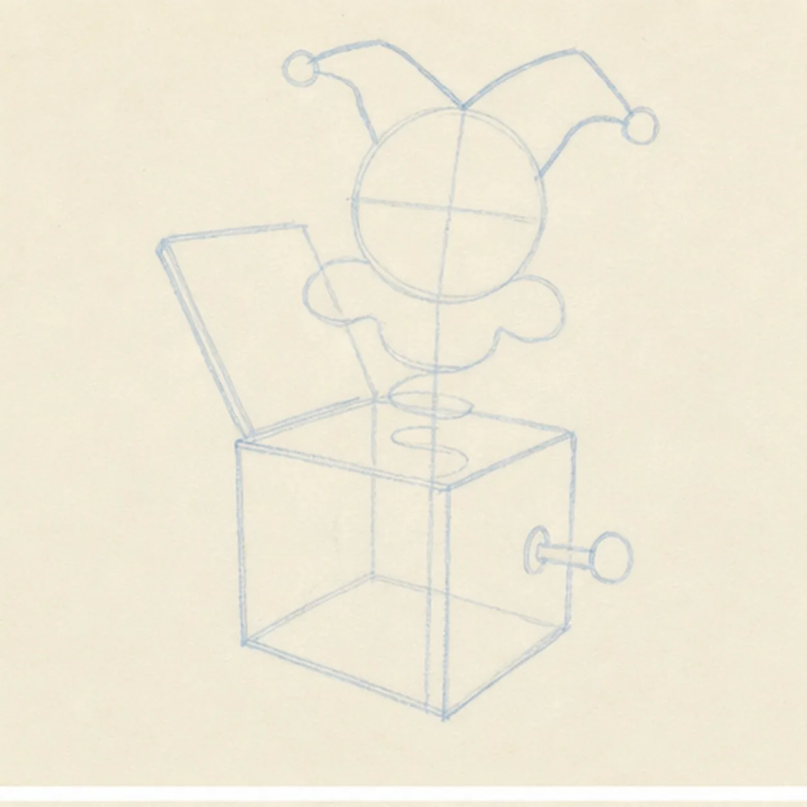
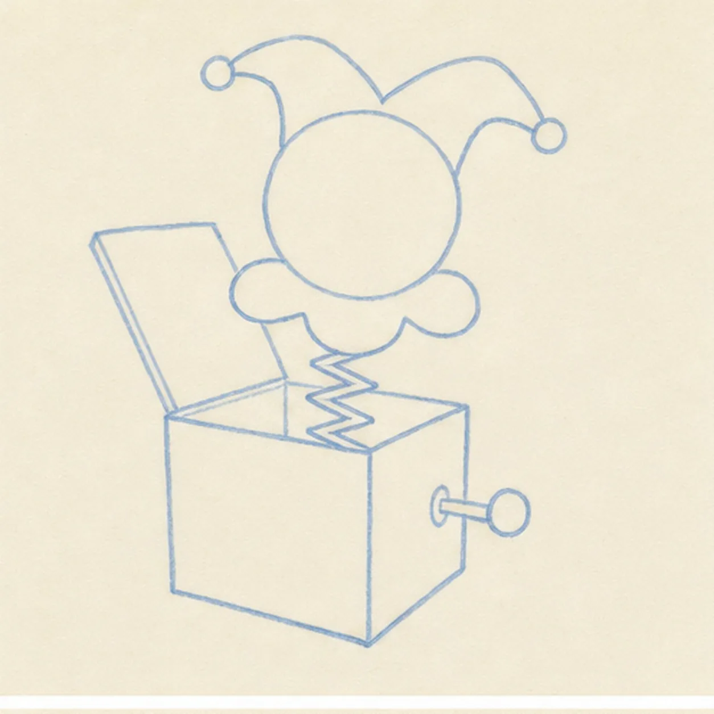
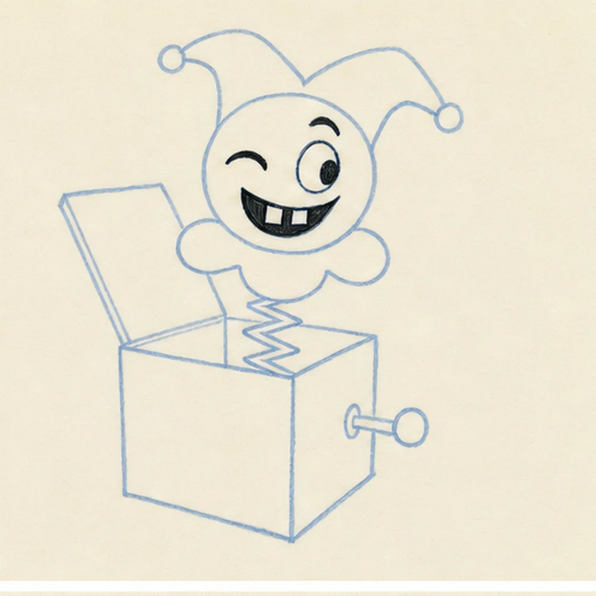
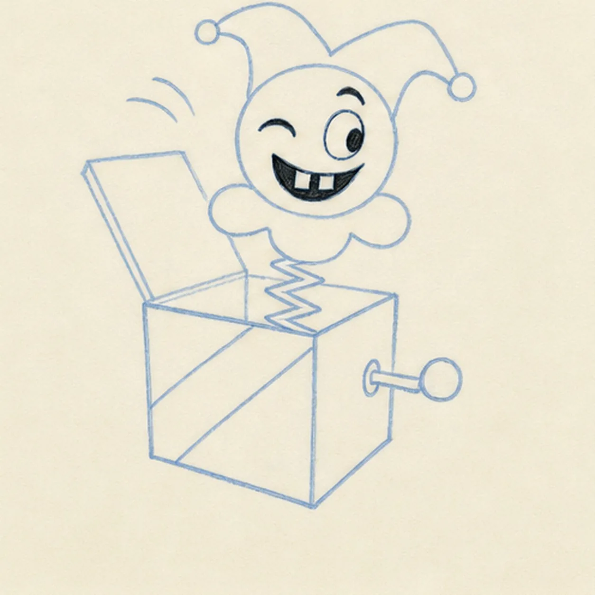
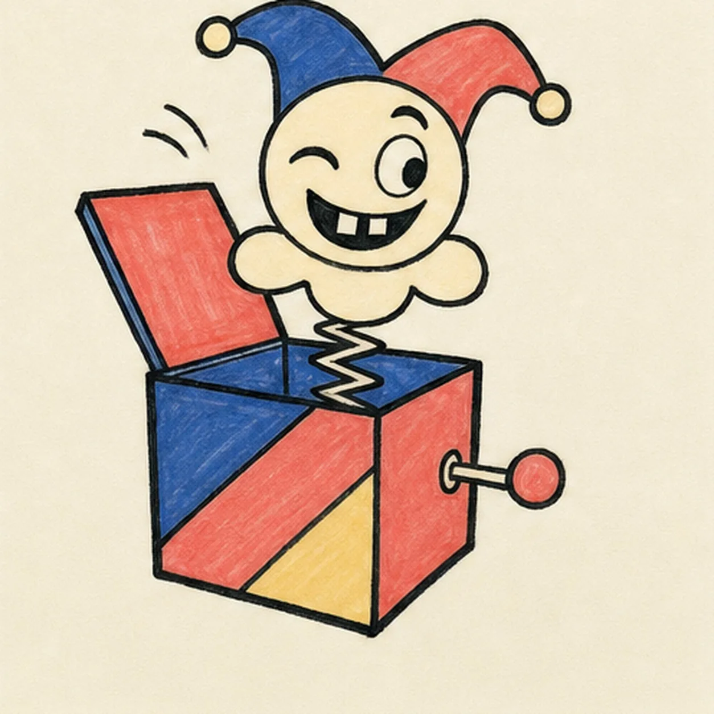

Felt-tip marker mode
Let's draw a cartoon jack-in-the-box
Treat this as one playful practice round: sketch the idea loosely, simplify the shapes, then commit with confident marker outlines and bright fills.
-
01

Block the box and surprise
Place one pale three-quarter cube, an open lid flap, a centered spring axis, and reserved footprints for the round head, ruff, two-point cap, and side crank.
Marker tip: Ghost the box edges before touching down and keep the two visible side planes different widths. Reserve the spring and head on one center line so the surprise does not lean away from the box.
-
02

Pop up the character
Wrap the guides with the complete box and lid, one zigzag spring, one round head, one broad three-lobed ruff, and one floppy two-point cap.
Marker tip: Stop the hidden spring cleanly behind the ruff and inside the box opening. Keep both cap points uneven so the silhouette feels playful instead of mirrored.
-
03

Aim the crooked grin
Add one crescent wink, one wide oval eye looking sideways, one raised brow over that eye, and one off-center open grin with exactly two square teeth.
Marker tip: Draw the wide eye first and push its pupil to one side, then tilt the grin toward the wink. The mismatched eyes, raised brow, and shifted mouth create the expression without default dot eyes or a U-smile.
-
04

Add the crank and motion
Add one side crank with a round handle, two broad diagonal division lines on the box front, and exactly two short curved motion arcs beside the lid.
Marker tip: Turn the page for the two long diagonal lines and keep them parallel enough to form one broad band. Count two motion arcs and leave open paper around the crank handle.
-
05

Ink the soft-retro colors
Thicken every established contour, then fill the cap and box with dusty cobalt, soft coral, and pale butter while keeping the face, ruff, spring, teeth, and highlights cream.
Marker tip: Pull marker strokes along each box plane and cap point, letting one color dry before its neighbor. Leave visible streaks and a few warm-paper gaps instead of polishing the fills smooth.
-
06
![Handmade marker drawing of one cartoon jack-in-the-box with a three-quarter toy box, open coral lid, centered cream zigzag spring, round cream face, broad three-lobed ruff, floppy two-point dusty-cobalt and soft-coral cap, one crescent wink, one wide oval eye looking sideways, one raised brow, one off-center black grin with exactly two square cream teeth, one side crank with coral handle, exactly two curved motion arcs, two diagonal front-panel divisions, dusty-cobalt, soft-coral, and pale-butter fills, thick imperfect black outlines, visible marker streaks, and warm-paper gaps; no text, confetti, sticker outline, or badge frame](../assets/cartoon-jack-in-the-box-finished-v1.webp)
Finish the springy surprise
Strengthen the established outlines and clarify the box, lid, spring, ruff, two-point cap, asymmetric face, two teeth, crank, panel divisions, two motion arcs, and soft-retro fills.
Marker tip: Count one wink, one wide eye, one raised brow, two teeth, one crank, and two motion arcs, then stop. Confetti, stars, text, an extra prop, a sticker edge, or a badge frame would make a different lesson.


![Handmade face-free felt-tip marker drawing of one open oyster in a three-quarter view with exactly two hinged shell halves, one raised seafoam fan shell, one cupped seafoam lower shell, one dark navy hinge, exactly one large pearl-gray pearl seated in the center, one coral scalloped inner lip, one muted-gray lower shell bed, broad radiating ribs, one thin white crescent highlight on the pearl, one thin white highlight along the upper rim, thick imperfect black outlines, visible marker streaks, and one broken deep-navy ground shadow](../assets/cartoon-oyster-with-pearl-finished-v1.webp)